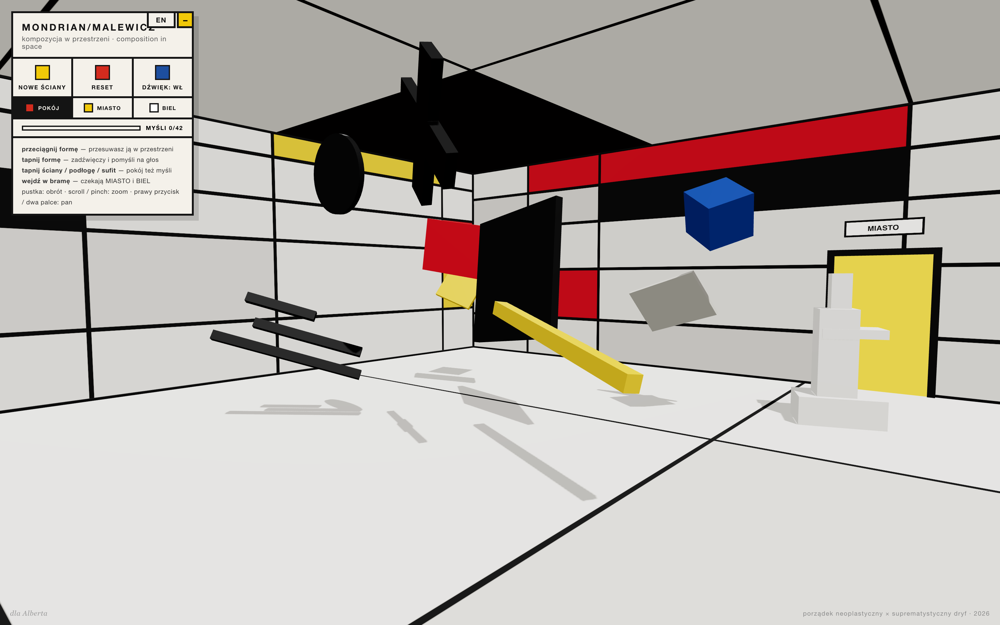

MedycynaSymulacja2026
CardioSim Pro
Pracownia farmakologii w karcie przeglądarki. 10 leków kardiologicznych, 8 scenariuszy klinicznych, hemodynamika real-time — zgodne z Circulation, EJCTS, StatPearls.
Pełny indeks pracowni: siedem prac flagowych, pięć satelitów rzeczniczo-badawczych, czternaście dalszych — laboratoria, redakcje, archiwa, sztuka, śledztwa. To, co już działa publicznie, i to, co dojrzewa w wersji beta.
Prace, które żyją na własnych domenach i mają pełne case studies. Otwarte do cytowania, do wykładu, do testowania w klasie.
Pracownia farmakologii w karcie przeglądarki. 10 leków kardiologicznych, 8 scenariuszy klinicznych, hemodynamika real-time — zgodne z Circulation, EJCTS, StatPearls.

Indeks 33 afer Big Techu: nadużycia platform, naruszenia prywatności, antymonopol, praktyki pracownicze. Wyszukiwalne, porównywalne, ze źródłami. PL/EN.

Elementarz noblisty o tym, jak działa AI. 15 rozdziałów Geoffreya Hintona, trzy edycje wizualne, dwujęzycznie PL/EN.

Alternatywa dla psychoanalizy. Graf 45 pojęć Deleuze'a i Guattariego, 50 pytań quizowych, trzy maszyny społeczne.

Interaktywny tryptyk 3D: POKÓJ — MIASTO — BIEL. 42 zweryfikowane cytaty z notami filozoficznymi. Bryły, dźwięk, drzwi. three.js.

Złota Liczba, jak to działa. Interaktywny atlas 3D Złotej Liczby: 12 komnat, 7 grywalnych, progresja przez złoto i rangi. Z Ghyki (1931).

Gdzie naprawdę przepływa światowa energia. 7 interaktywnych map, 240+ obiektów infrastruktury, status: aktywne / uszkodzone / zamknięte / planowane.
Projekty, które poszerzają Matrycę w stronę cyfrowej suwerenności, edukacji, polityki i prywatności. Część jest publicznie dostępna, część dopiero dojrzewa.
Laboratoria, redakcje, archiwa, sztuka, śledztwa, filmy. Niektóre żyją publicznie, niektóre dojrzewają.